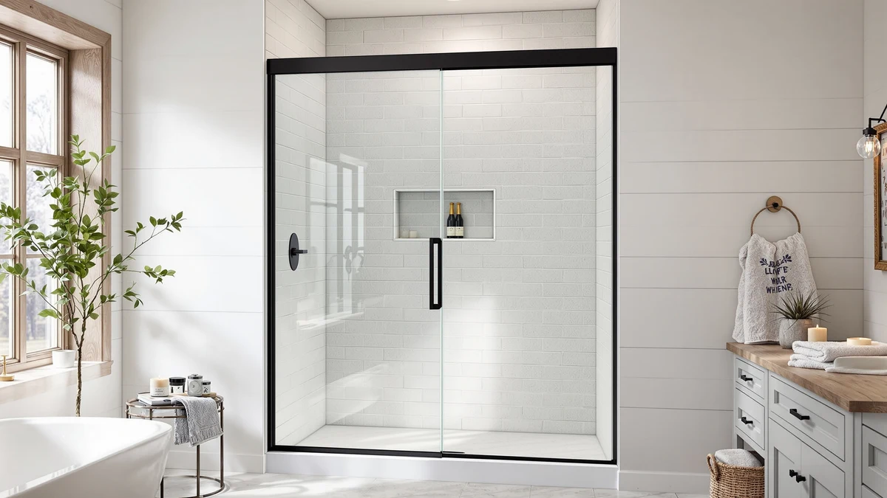

Pivot Shower Door 38 Review (2026): Worth It?
Prices and picks verified as of September 2026. Independent, reader-supported reviews.


Quick Answer
This pivot shower door 38 review compares the $359.99 Royal Guard Pivot Shower Door, built for a 38 to 42 inch wide, 71 inch tall opening, against three alternative shower doors priced from $329.99 to $359.99. It ties for the highest price in this comparison, but its adjustable width range gives it more installation flexibility than the fixed-width Botwinkle.
Our pick: Pivot Shower Door 38-42" W, $359.99 Check Price on Amazon
Bottom line: our top pick is the Pivot Shower Door at $359.99.
Things to Know Before You Buy
- At $359.99, the Royal Guard ties with the LianLobo Frameless Sliding Glass Shower Door for the highest price in this comparison. The GETPRO lists at $347.92 and the Botwinkle at $329.99.
- The Royal Guard's 38 to 42 inch adjustable width is the widest install range in this group. That flexibility matters if your opening doesn't measure to an exact inch.
- The height is fixed at 71 inches, not adjustable. Measure your opening's height carefully before you order, since a pivot door's swing arc depends on an accurate fit.
- The listing doesn't specify a frame material, unlike the size and price details, which are stated plainly on the product page.
- None of the four doors in this comparison show a published rating or review count yet. There isn't an owner feedback history to weigh against the price and size differences.
This pivot shower door 38 review looks at whether the Royal Guard Pivot Shower Door 38-42" W justifies its $359.99 price against three other shower doors that range from $329.99 to $359.99. The Royal Guard's defining feature is its adjustable 38 to 42 inch width, built for a 71 inch tall opening, and that flexibility shapes how it compares to the fixed-width alternatives covered later in this review.
We wrote this pivot shower door 38 review because shoppers replacing a standalone shower door often assume every pivot model fits the same rough opening. The Royal Guard's 38 to 42 inch range covers more ground than a fixed-width door like the Botwinkle, and that's the main reason it sits at the top of this comparison despite tying for the highest price.
Why You Should Trust Us
Ilane Tall covers bath fixtures for Best Shower Doors and has researched shower doors across pivot, sliding, and semi-frameless designs. For this pivot shower door 38 review, she compared the Royal Guard's price, width range, and height against three alternative shower doors in a similar price bracket. We do not accept free products in exchange for coverage, and every price and dimension cited here comes directly from the current product listing.
Our editorial process treats an adjustable width range as one factor among several, not an automatic win. That flexibility earns credit in this review, but the Royal Guard still has to justify tying for the highest price in this comparison against three doors that cost the same or less. That approach shapes every comparison in this piece.
Our Research Experience
This pivot shower door 38 review is based on research, not physical use. We compared the Royal Guard Pivot Shower Door 38-42" W against three alternatives using the specifications, pricing, and product listings available for each door. We do not run a fake testing lab, and we do not claim to have installed or lived with any of the doors covered here.
We looked closely at how the Royal Guard's adjustable 38 to 42 inch width compares to the Botwinkle's fixed 56 to 60 inch range and the unlisted widths of the LianLobo and GETPRO doors, since an adjustable frame changes how forgiving a pivot door is to an imprecise measurement.
We also cross-checked pricing for all three alternatives against the current listings to confirm nothing had shifted since publication. Where a data point wasn't available, such as a published rating, review count, or frame material for any of the four doors, we noted that gap rather than estimate a number the listing doesn't provide.
This pivot shower door 38 review updates its pricing as listings change, so the figures above reflect what each seller published at the time we last checked. If a price shifts significantly after publication, treat the percentage difference between doors as more reliable than the exact dollar figures.
Overview & Specs

Pivot Shower Door 38-42" W
What we like
- The 38 to 42 inch adjustable width covers more sizing ground than any fixed-width alternative in this comparison
- A 71 inch height is stated plainly on the listing, giving you an exact number to check against your own opening
- As a pivot design, it swings open on a single side rather than requiring a sliding track, which can simplify installation in a tighter stall
Flaws but not dealbreakers
- At $359.99, it ties the LianLobo for the highest price in this comparison and costs more than the GETPRO or the Botwinkle
- The listing doesn't specify a frame material, unlike the size and price details
- There's no published rating or review count yet, so there isn't an owner feedback history to weigh
| Material | — |
| Size | Pivot 42" W x 71" H |
The Royal Guard Pivot Shower Door 38-42" W is one of two doors tied for the highest price in this comparison: a $359.99 build with an adjustable 38 to 42 inch width and a fixed 71 inch height. That adjustable range is the widest in this group, which matters if your opening doesn't measure to an exact inch.
That price matches the LianLobo Frameless Sliding Glass Shower Door and runs $12.07 more than the GETPRO and $30.00 more than the Botwinkle, the two lower-priced alternatives covered below. The question is whether the pivot design and adjustable width are worth paying the top price in this comparison.
What We Liked
The clearest strength in this pivot shower door 38 review is the Royal Guard's adjustable width. A 38 to 42 inch range gives you more room for error than a fixed-width door, and that's a meaningful advantage over the Botwinkle's fixed 56 to 60 inch frame covered later in this comparison.
The pivot mechanism itself is worth calling out too. Instead of relying on a sliding track like the LianLobo or the GETPRO, a pivot door swings open on a single hinge point, which can be easier to install and seal in a narrower stall.
We also liked that the Royal Guard's dimensions are stated plainly, at 38 to 42 inches wide and 71 inches tall, giving you two exact numbers to check against your own opening before you buy. That level of specificity carries through the rest of the listing, even where other details, like frame material, aren't specified.
A pivot hinge also has fewer moving parts than a sliding track, and fewer parts generally means less to clean and maintain over time. Sliding doors like the LianLobo depend on rollers staying free of soap scum and mineral buildup, while a pivot door's main wear point is the hinge itself.
What Could Be Better
Price is the clearest drawback in this pivot shower door 38 review. At $359.99, the Royal Guard ties the LianLobo for the highest price in this comparison and costs $12.07 more than the GETPRO and $30.00 more than the Botwinkle.
The listing also doesn't specify a frame material, which stands out against the size and price details that are stated clearly. And because none of the four doors in this comparison show a published rating or review count yet, you won't find an owner feedback history to weigh for any of them.
Who Is It For?
The Royal Guard Pivot Shower Door makes the most sense if your opening falls somewhere between 38 and 42 inches wide and 71 inches tall, and you'd rather pay the top price in this comparison for that sizing flexibility than settle for a fixed-width frame.
If your budget caps closer to $330, or if your opening doesn't fall in that 38 to 42 inch range, the three alternatives below cover different price points and door styles. Check each listing's stated dimensions against your own stall before you decide.
Buyers who prioritize a wider opening over sizing precision should look at the Botwinkle first, and anyone who prefers a sliding track over a swinging panel will find the LianLobo or the GETPRO a closer fit than a pivot door like the Royal Guard.
Alternatives to Consider
The Royal Guard Pivot Shower Door isn't the only option in this comparison, and the three doors below cover different price points and door styles. Each one trades the pivot design's adjustable width for a sliding or semi-frameless configuration, so weigh which style fits your bathroom best.

Editor's Pick
Frameless Sliding Glass Shower Door
At $359.99, the LianLobo ties the Royal Guard on price but swaps the pivot design for a frameless sliding track, worth a look if you prefer a sliding door over a swinging one.
$359.99
Check Price on Amazon
Best Value
GETPRO Semi-Frameless Shower Door Double
The GETPRO lists at $347.92, $12.07 less than the Royal Guard, with a semi-frameless double-door design instead of a single pivot panel, a middle-ground option on both price and style.
$347.92
Check Price on Amazon
Premium Choice
Botwinkle Shower Door 56-60" W
The Botwinkle is the most affordable door in this comparison at $329.99, built for a wider fixed 56 to 60 inch opening, the pick if your stall is larger than the Royal Guard's 38 to 42 inch range.
$329.99
Check Price on AmazonFrequently Asked Questions
How much does the Royal Guard pivot shower door 38 review model cost?
The Royal Guard Pivot Shower Door 38-42" W lists at $359.99, tied with the LianLobo for the highest price in this comparison. The GETPRO runs $347.92 and the Botwinkle is $329.99.
What size opening does the Royal Guard pivot shower door fit?
The Royal Guard is built for an adjustable 38 to 42 inch wide, 71 inch tall opening. Measure your stall's width and height before you order, since a pivot door's swing depends on an accurate fit.
Is the Royal Guard pivot shower door worth the price over the Botwinkle alternative?
It depends on your opening size and door style preference. The Royal Guard fits a narrower 38 to 42 inch range with a pivot design, while the Botwinkle covers a wider fixed 56 to 60 inch opening for $30.00 less. Check your stall's width against both ranges before you decide.
Final Verdict
This pivot shower door 38 review comes down to one trade-off: an adjustable 38 to 42 inch width at $359.99 against three alternatives that cost the same or less. If your opening falls in that 38 to 42 inch range and you want the sizing flexibility a pivot design offers, the Royal Guard earns its place at the top of this comparison over the LianLobo, the GETPRO, and the Botwinkle. If you'd rather save money or your opening runs wider, the GETPRO covers a semi-frameless double-door style for $12.07 less, and the Botwinkle fits a 56 to 60 inch opening for $30.00 less. Either way, confirm your opening's exact width and height before you buy, since that's what separates an adjustable pivot door like the Royal Guard from the fixed-width alternatives in this review.